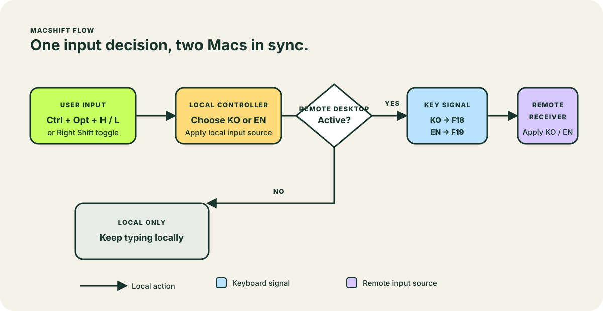

One small bridge
No server, SSH tunnel, clipboard access, or text capture. MacSHIFT uses keyboard events already flowing through your shared session.
TWO MACS, IN STEP
MacSHIFT synchronizes Korean and English input sources between two Macs in a shared session. Verified with Jump Desktop and macOS Screen Sharing.
INSTALL ON EACH MAC
curl -fsSL https://raw.githubusercontent.com/bluehope/MacSHIFT/main/bootstrap.sh | shNo server, SSH tunnel, clipboard access, or text capture. MacSHIFT uses keyboard events already flowing through your shared session.
Run it on every Mac in the session: the Mac you are using and the other Mac. Jump Desktop Viewer and Connect are detected automatically when available.
HOW IT WORKS

Macbook icons created by Those Icons - Flaticon · Mac mini icons created by Those Icons - Flaticon
THREE STEPS
./install.sh on every Mac in the session: this Mac and the other Mac.Press your configured toggle shortcut once—⇧R by default. MacSHIFT uses this Mac’s current Korean or English state and applies it to the other Mac, regardless of either Mac’s starting state.
POWERED BY HAMMERSPOON
Hammerspoon listens for shortcuts, changes macOS input sources, and carries MacSHIFT’s F18/F19 sync signals. It also lets the installer start MacSHIFT and reload its configuration immediately.
MacSHIFT neither records typing nor reads the clipboard. The optional daily updater only checks GitHub Releases and verifies the release checksum before installation.
MacSHIFT는 입력 내용이나 클립보드를 읽거나 저장하지 않습니다. 현재 두벌식 한국어와 ABC 영어를 지원합니다.